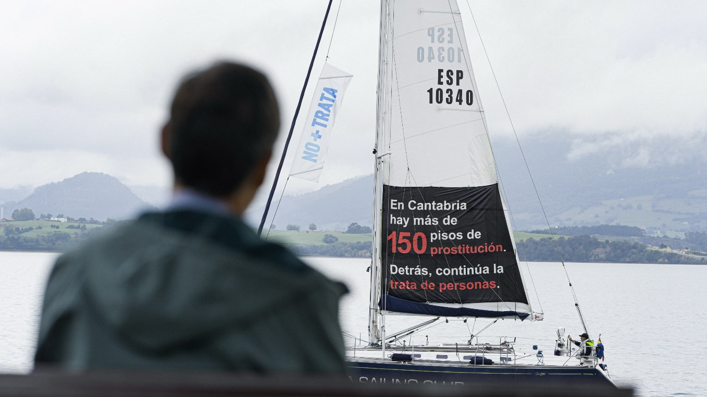

Asociación Nueva Vida
More than three years telling stories that are hard to tell. From inside the organisation, I turn its daily work with people on the margins into campaigns people actually stop to watch.

Cover still- Client
- Asociación Nueva Vida, Santander
- Period
- 2023–present
- My role
- Copywriter and filmmaker
- Format
- Campaigns, films and social media
The organisation
For three decades Nueva Vida has worked in Santander, Torrelavega and Cabezón de la Sal with the people a city tends not to see: people experiencing homelessness, women who have survived trafficking for sexual exploitation, refugees and asylum seekers, and people in prison and their families. Shelters, reception centres, food and clothing banks, and NUVITEX, a textile social enterprise that trains and employs trafficking survivors.
My role
Copywriter and filmmaker, hand in hand with the team. I take each campaign from the first idea and the script to the shoot, the edit and the line that goes out on social media. The challenge is always the same: to talk about exclusion without pity and without spectacle. With humour when it helps, and with respect always.
Campaigns
- El Free Tour de la TrataA walking tour through the trafficking hidden in plain sight. 4M+ views and national press.
- Campaña 150“In Cantabria there are more than 150 prostitution flats. Behind them, trafficking goes on.” A message hoisted on a sailboat, on film and on social media.
- Muy de SantanderA campaign for the city, from script to edit.
- @no.mas.trataThe anti-trafficking channel: content and copy, every week.
- 25 Years of Nueva VidaThe anniversary film: a quarter of a century in the voices of the people who lived it.
Allies
The fight against trafficking also plays at El Sardinero: Real Racing Club de Santander and its Foundation have joined Nueva Vida’s cause, and in 2026 the organisation recognised them on the International Day against Sexual Exploitation and Trafficking.